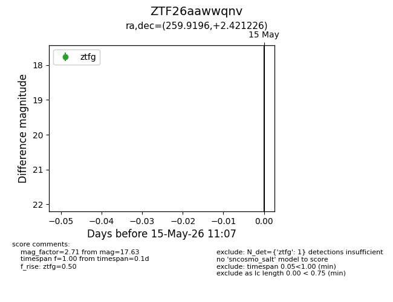
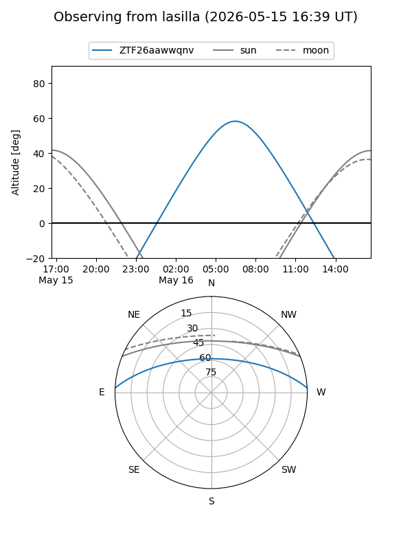
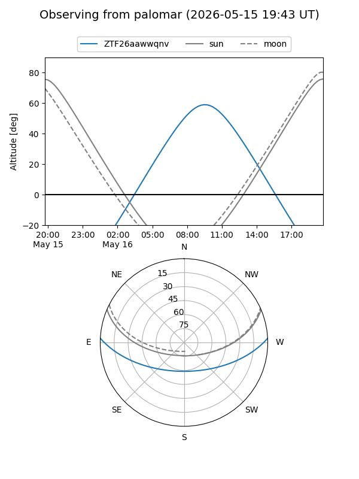

ZTF26aawwqnv
Target ZTF26aawwqnv at 2026-05-15 11:11
Aliases and brokers:
FINK: link
Lasair: link
ALeRCE: link
alt names
ZTF26aawwqnv (ztf,fink_ztf)
Coordinates:
equatorial (ra, dec) = 259.9196,+2.42123
equatorial (HMS+DMS) = 17:19:40.70,+02:25:16.41
galactic (l, b) = (24.2821,+21.45928)
Flags:
Photometry:
last ztfg=17.63
1 ztfg detections
Lightcurve

Visibility


Additional plots